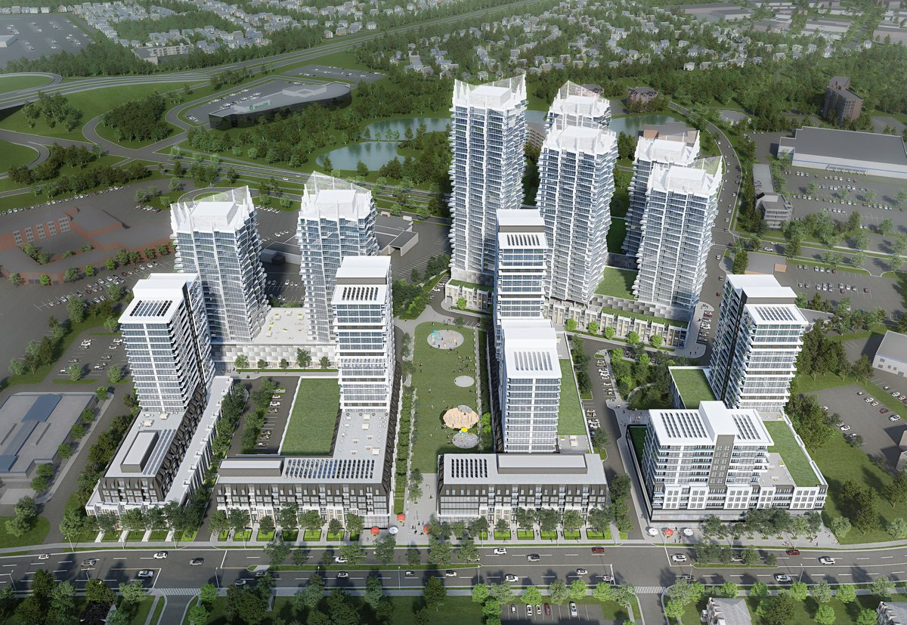
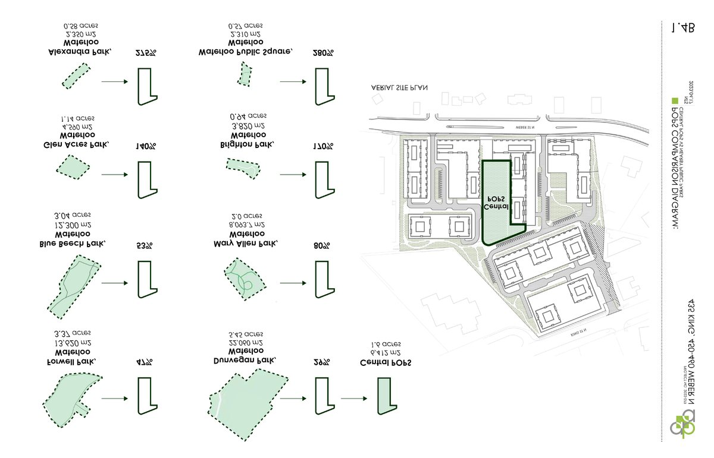
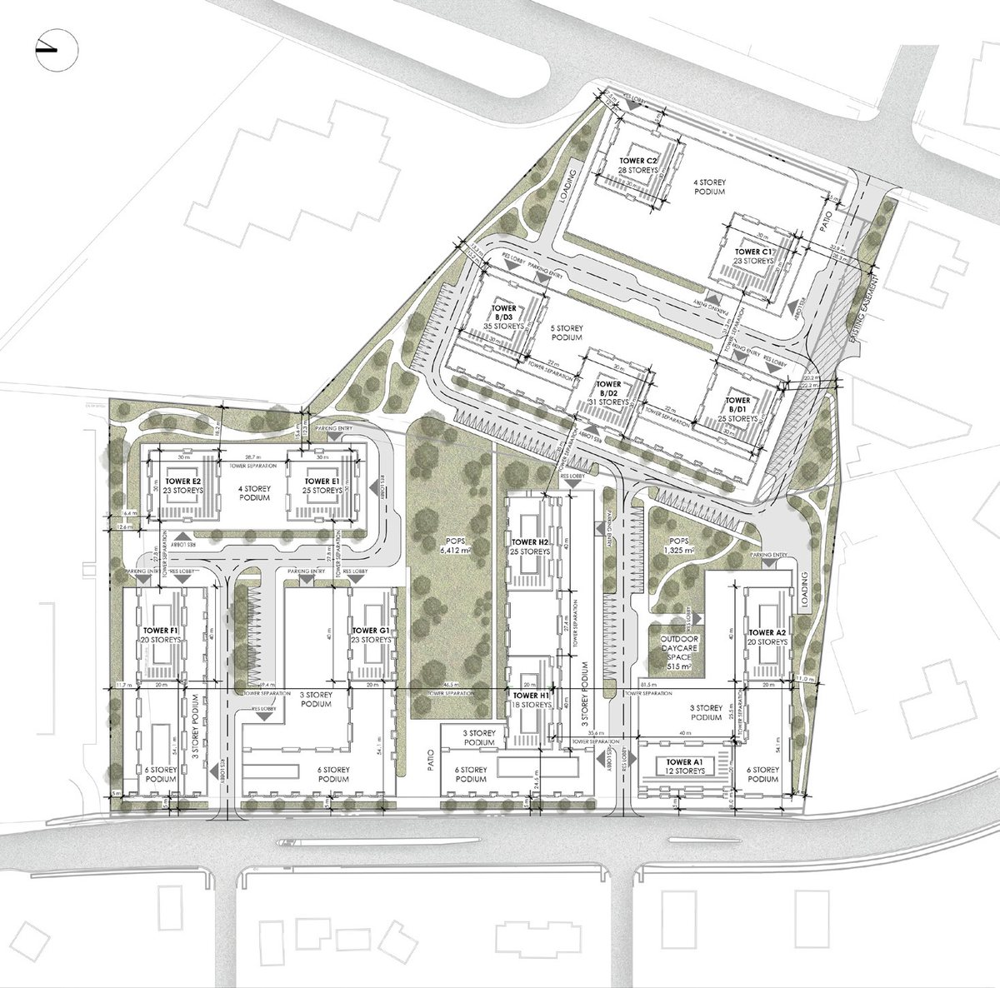

Professional · 2022-ongoing
Waterloo Centerpiece
A high-density mixed-use district with seven buildings, thirteen towers, pedestrian-oriented streets, green spaces, and transit connectivity.
Project Summary: This proposal reimagines underutilized land in Waterloo as a vibrant, high-density mixed-use district that prioritizes connectivity, sustainability, and community life. Designed as a three-phase development comprising seven buildings and thirteen towers ranging from 6 to 35 storeys, the project integrates residential, commercial, and office uses within a cohesive urban framework totaling approximately 258,000 m² of gross floor area. A network of pedestrian-oriented streets, green spaces, and varied circulation routes creates diverse spatial experiences, encouraging social interaction and everyday walkability. Supported by access to transit, including bus and LRT connections, as well as nearby recreational trails, the development establishes a complete community that expands housing opportunities while strengthening the surrounding neighborhood and public realm.
Responsibilities: As an Intern Architect, I contributed to the project from the pre-consultation stage through the Zoning By-law Amendment and Official Plan Amendment submission process. My responsibilities included assisting with the conceptual development and preparation of the site plan, developing the Terms of Reference, and supporting the design team with floor plans, sections, 3D massing studies, facade explorations, site statistics analysis, and rendering coordination. I also participated in meetings with the client, municipal staff, and community stakeholders, including neighborhood consultation sessions where I helped present the proposal and respond to public questions. In addition, I coordinated and assembled submission materials and supported the preparation of the overall planning application package.




Related projects
Explore adjacent work

Denver's Missing Middle
An evolutionary mixed-income townhouse community for Denver's Globeville neighborhood, designed around modular bays, live/work options, and shared outdoor amenities.

Cambridge Highlight
A multi-building residential redevelopment introducing 1,046 apartment units and active street edges on a former industrial property.

Erb Residential
A six-storey residential building in Waterloo with 91 units, 112 parking spaces, and a contemporary material palette.